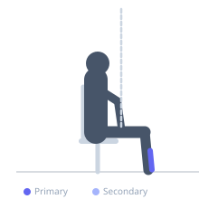
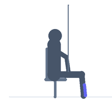

Exercise guide / Seated Tibialis Raise with Band
Seated Tibialis Raise with Band
A seated exercise targeting the tibialis anterior through dorsiflexion against resistance from a band. The exerciser sits with one end of a resistance band looped around the forefoot, with the other end anchored forward. By pulling the toes back toward the shin against band resistance, the tibialis anterior — the muscle running along the outer shin — is loaded. This exercise is critical for shin splint prevention, anterior compartment syndrome rehabilitation, and ankle stability programs.
Primary muscles
tibialis anterior
Secondary muscles
Equipment
Resistance Band (Loop / Mini Band)
Optional
Resistance Band (Tube with Handles)


Starting position
- Sit on the floor or a chair with the leg extended forward. Loop a resistance band around the forefoot, anchoring the other end to a stable object in front of the foot. Begin with the foot in a neutral or slightly plantarflexed position.
Setup
- Anchor the band to something at floor level — a heavy dumbbell, power rack base, or a door anchor near the floor. The band should provide resistance against dorsiflexion (pulling toes up).
Steps
- Step 1: Sit with the leg extended and the band looped around the top of the foot, anchored in front.
- Step 2: Pull the toes and forefoot back toward the shin (dorsiflexion) against the band resistance.
- Step 3: Hold the dorsiflexed position briefly, feeling the contraction along the outer shin.
- Step 4: Slowly lower the foot back toward the starting position under control. Repeat.
Coaching cues
- Feel the muscles along the outer shin working — that is the tibialis anterior
- Slow on the way down — the controlled lowering phase builds the most strength for shin splint prevention
- Keep the heel grounded throughout the movement
Breathing
- Exhale as you dorsiflex (pull toes back). Inhale as you lower.
Range of motion
- Full dorsiflexion — toes pull back as far as the ankle allows without the leg lifting from the floor.
Tempo
- 2s dorsiflexion, 1s hold, 3s slow return (the eccentric return is critical for shin splint rehab)
Common mistakes
- Using the entire leg to assist the movement — only the foot should move
- Not achieving full dorsiflexion range due to band tension that is too heavy
- Allowing the heel to lift from the floor, reducing tibialis anterior isolation
Safety
- This exercise should be pain-free in both directions — if pulling back causes sharp shin pain, reduce band tension
- For shin splint rehab: start with lighter band and higher reps, progress gradually
Training
- endurance: 15–25 reps
- mobility: 10–15 reps
- endurance: 2–3 sets
- mobility: 2–3 sets
- Rest: {'endurance': 45, 'mobility': 60}